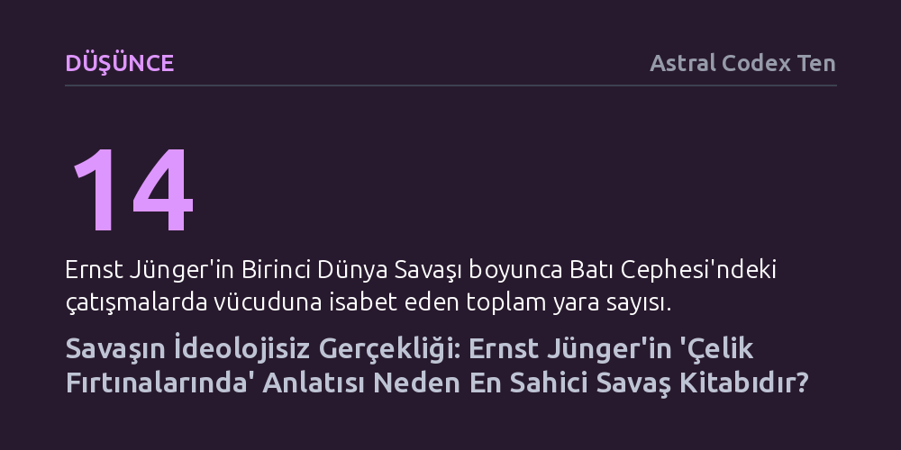

DUSUNCE · Astral Codex Ten · 2026-10-18
Ernst Jünger’in Birinci Dünya Savaşı günlüğü Çelik Fırtınalarında, ideolojik tezlerle kurgulanmış romanların aksine, endüstriyel ölümün dehşetini tarafsızca aktaran en sahici savaş anlatısıdır. Eser, hiçbir teselli sunmayan mutlak yıkım karşısında insanı ayakta tutan yegâne gücün görev bilinci olduğunu gösteriyor.
Savaşın dehşetini kavramak için önceden kurgulanmış ahlaki vaazlara değil çıplak gözleme ihtiyaç duyulduğunu ve anlamını yitirmiş felaketler karşısında insanı ayakta tutan yegâne bağın görev bilinci olduğunu gösterir.

Erich Maria Remarque'ın Batı Cephesinde Yeni Bir Şey Yok adlı eseri, yirmi milyondan fazla satmış ve defalarca sinemaya uyarlanmış klasik bir savaş karşıtı başyapıt kabul edilir. Ancak bu yapıt, savaşı baştan mahkûm etme amacıyla yazılmış, sonucunu önceden belirleyip olay örgüsünü geriye doğru örmüş tezli bir romandır. Remarque cephede yalnızca beş hafta geçirmiş, çoğunlukla geri hizmette inşaat işlerinde bulunmuş ve bizzat yaşamadığı şiddetli çatışmaları ahlaki bir mesaj iletmek adına dramatize etmiştir.
Ernst Jünger’in 1920 tarihli Çelik Fırtınalarında kitabı ise kurgusal bir tez sunmaz; doğrudan cephede tutulmuş günlüklere dayanır. Dört yıl boyunca siperlerin en ön saflarında erlikten bölük komutanlığına yükselen, on dört kez yaralanan ve Prusya'nın en yüksek askeri nişanı Pour le Mérite ile ödüllendirilen Jünger, savaşı süslemeden ve ideolojik bir vaaza alet etmeden kaydeder. Eserin çarpıcı gücü, okuru ahlaki bir kalıba zorlamayan bu tavizsiz gerçekçiliğinden kaynaklanır.
Jünger aynı zamanda bağımsız bir böcekbilimcidir ve savaş meydanına da bir doğa bilimcinin tarafsız ve keskin merceğiyle bakar. Siper kazarken toprağın yapısından top mermilerinin açtığı yaraların anatomisine kadar her ayrıntıyı serinkanlı bir dikkatle kaydeder. Hakkındaki acımasız katil yaftalamalarının aksine şiddetten sadistçe bir haz almaz; düşmanına kin beslemez, karşı siperdekilerin cesaretini takdir eder ve namlunun ucundaki İngiliz subayının cebinden çıkardığı aile fotoğrafını görünce onu vurmaktan vazgeçer.
Kitapta savaş, insan iradesini aşan bir doğa felaketi, kıyıları ezip geçen bir kasırga gibi tasvir edilir. Ne ucuz bir kahramanlık propagandasıdır ne de salt bir mağduriyet edebiyatı. Okur militarist bir bakışla yaklaşırsa eserde yoldaşlık ve cesareti; savaş karşıtı bir gözle bakarsa endüstriyel ölüm makinesinin saçmalığını ve yıkımını bulabilir. Metin kendi hükmünü dayatmaz, muhakemeyi tamamen okura devreder.
Çelik Fırtınalarında, Jünger’in ömrü boyunca yeniden ele aldığı ve dönüştürdüğü yaşayan bir metindir. İlk yayımlandığı 1920'lerden Weimar Cumhuriyeti'nin yenilgi ve ekonomik çöküş hissiyle yoğrulan 1924 baskısına kadar eser, belirgin bir milliyetçi ve kavgacı retorik taşır. Bu erken dönem üslubu, imparatorluğun çöküşünü kabullenemeyen bir kuşağın öfkesini yansıtır.
Ancak İkinci Dünya Savaşı'nın yıkımını, Nazi rejiminin barbarlığını ve ülkesinin harabeye dönüşünü bizzat gören Jünger, 1961'deki son edisyonunda metni milliyetçi hamasetten tamamen arındırmıştır. Eserin nihai kapanışı, büyük fetih naralarından ziyade, Neckar yamaçlarındaki çiçek açmış kiraz ağaçlarına ve evine dönen bir askerin yalın şükranına odaklanır. Bu sadeleşme, kitabın ideolojik bir bildiri değil, insan ruhunun savaşı anlama serüveni olduğunu doğrular.
Yazının en çarpıcı tespiti, endüstriyel cehennemin ortasında bireyin nasıl aklını koruyabildiği sorusunda düğümlenir. Yoğun topçu bombardımanı altında tek başına bir çukura sığınan insan için bütün zekâsı, ahlaki birikimi ve ruhsal özellikleri bir anda anlamsızlaşır; tonlarca demir kütlesi her an onu biçimsiz bir çamur yığınına çevirebilir. Savaşın kendisinden ulvi bir anlam çıkarmak imkânsızdır; geriye sadece bu dehşeti göğüsleme iradesi kalır.
Yazar bu varoluşsal çıkmazı, yirmi dört haftalıkken altı yüz yetmiş beş gram doğan ve yoğun bakımda hayatta kalma mücadelesi veren kızıyla kurduğu bağ üzerinden temellendirir. Karşı konulamaz ve adaletsiz bir felaket karşısında insanı kaçıp gitmekten alıkoyan şey soyut ideolojiler değil, sevdiğine duyduğu koşulsuz borçtur. Jünger’in siperlerdeki tutumunda olduğu gibi insanı ayakta tutan yegâne dayanak, sonucunu garanti edemese bile yükümlülüğünü sonuna kadar üstlenme bilincidir.